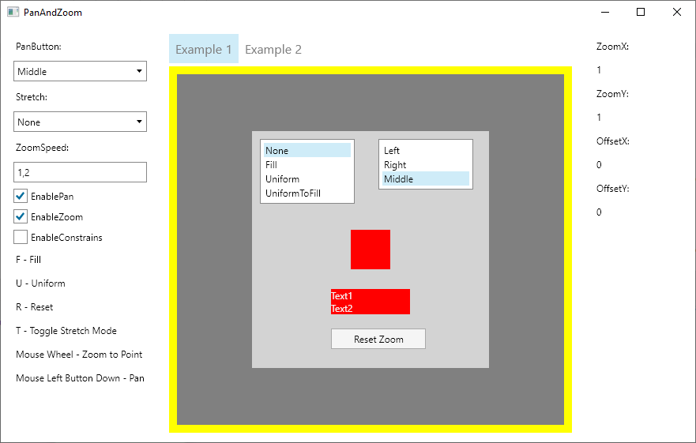

PanAndZoom packages a production-ready ZoomBorder control for pan, zoom, bounds management, and view-state workflows, plus HeadlessTestingFramework for gesture simulation, tree inspection, Appium-style APIs, and visual recording in Avalonia tests.

Package setup for both libraries, headless test prerequisites, and the first integration checks.
Quickstart: ZoomBorderCreate a zoomable surface, bind commands, and wire pointer and keyboard interaction.
Quickstart: Headless TestingDrive Avalonia controls with touch, keyboard, and Appium-style APIs inside headless tests.
Sample WalkthroughMap the sample app tabs to concrete ZoomBorder features and testing scenarios.
ZoomBorder, matrix helpers, commands, history, state persistence, bounds control, and advanced viewport utilities.
Input simulation, tree queries, template inspection, recording, video conversion, and Appium-like interaction layers.
Choose the right package, install it, and get your first sample or test working quickly.
ConceptsCoordinate systems, transformation state, gestures, commands, and persistence mental models.
GuidesScenario-driven recipes for bounds management, view history, keyboard control, zoom-to-rectangle, and more.
Headless TestingTesting workflows spanning gesture simulation, tree introspection, Appium-like APIs, and recording.
AdvancedCustom bounds and resize hooks, ScrollViewer integration, diagnostics, and project-level testing strategy.
ReferenceNamespace maps, API coverage, Lunet pipeline details, and licensing.